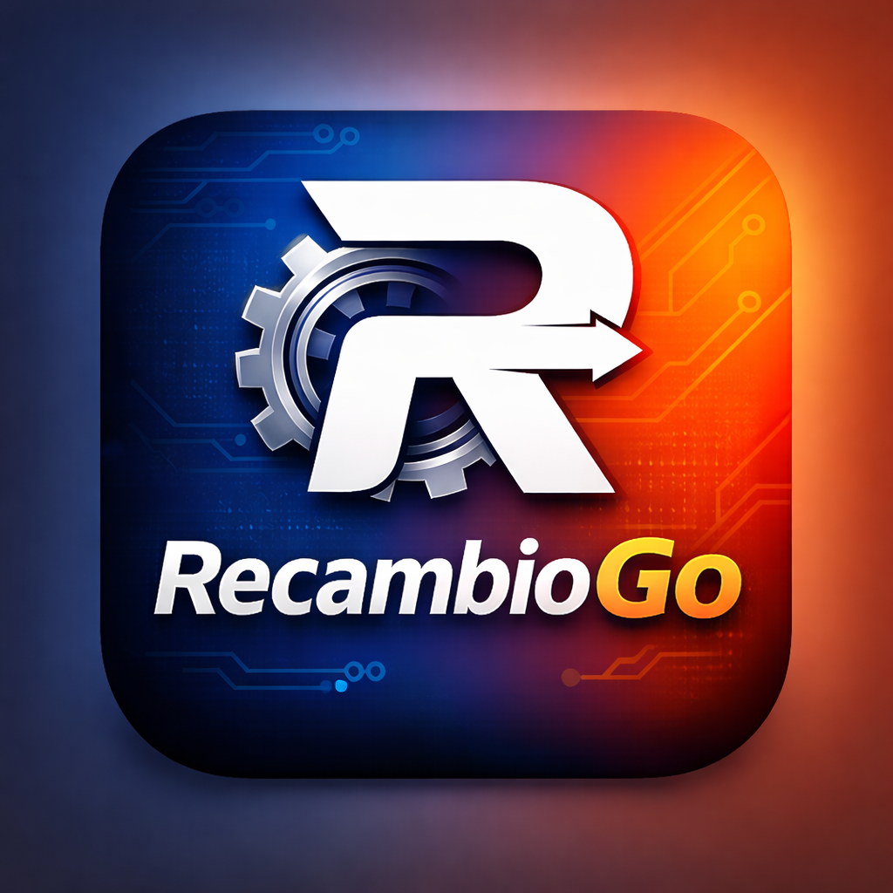

Mira en tu garaje.
Ese faro, esa llanta o ese retrovisor que guarda polvo todavía puede tener mucho camino por delante.

Conecta con personas de todo el mundo para enviar y recibir piezas de segunda mano. Eso que ya no usas puede ser justo lo que otro coche necesita para volver a brillar.
ReCambioGo nace para acercar a quien tiene una pieza con quien lleva tiempo buscándola. De un garaje a otro, empieza una nueva historia.
Ese faro, esa llanta o ese retrovisor que guarda polvo todavía puede tener mucho camino por delante.
La app está pensada para poner en contacto a personas y compartir los detalles de cada pieza: modelo, estado y compatibilidad.
Acordad cómo enviar o recibir la pieza. Lo que estaba olvidado puede ayudar a devolver un coche a la carretera.
En tu ciudad o al otro lado del mundo, hay alguien que puede estar buscando justo lo que tú tienes. ReCambioGo quiere que la distancia deje de separar piezas e historias.
Descubre nuestra visión ↗No todas las maravillas están en un museo. Algunas esperan en un taller, bajo una lona o en el garaje de alguien que se resiste a dejarlas atrás.
Y a veces, lo único que les falta es una pieza que otra persona tiene olvidada. Queremos conectar esas dos historias: aprovechar lo que ya existe, compartir nuestra pasión y dar una segunda oportunidad a los coches que aún tienen mucho que contar.
Es una app para conectar a personas que tienen repuestos de segunda mano con otras que los necesitan. Su idea es facilitar la comunicación para enviar y recibir piezas, y ayudar a que más coches vuelvan a la carretera.
Faros, llantas, retrovisores, elementos de interior y otros repuestos que aún puedan reutilizarse. Describe siempre su estado real y cualquier desperfecto.
La referencia de la pieza, el modelo y año del coche, su estado y sus medidas cuando sean relevantes. Acordad también el embalaje, el destino y el coste del envío.
Esta web presenta ReCambioGo. El enlace oficial de descarga se añadirá aquí cuando esté disponible.
ReCambioGo. Conectamos garajes, personas y pasión.